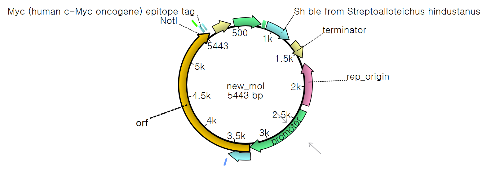
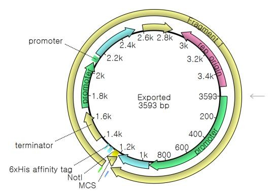

MEDICAL BIOTECHNOLOGY · IN SILICO CLONING
Fc–SERPINA1 RECOMBINANT EXPRESSION CONSTRUCT
An in-silico cloning project designing and verifying a secretion-oriented Fc–SerpinA1 expression construct in the pPICZαA vector framework.
Design goal
Build a directional recombinant construct suitable for secretory expression, while preserving reading frame and key sequence features.
Approach
EcoRI and NotI sites were used for directional assembly. The final construct was checked for restriction-site structure, insert orientation and a continuous open reading frame across the designed expression cassette.
Skills demonstrated
- In-silico cloning
- Restriction mapping
- ORF verification
- Vector design
Selected visuals

